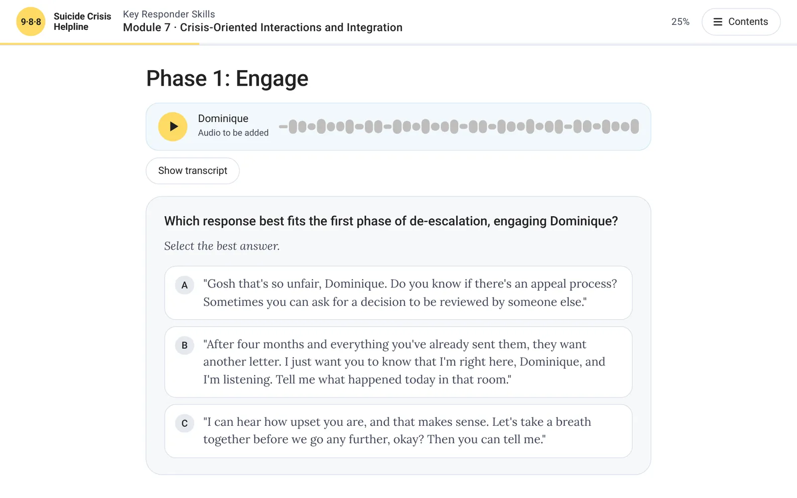
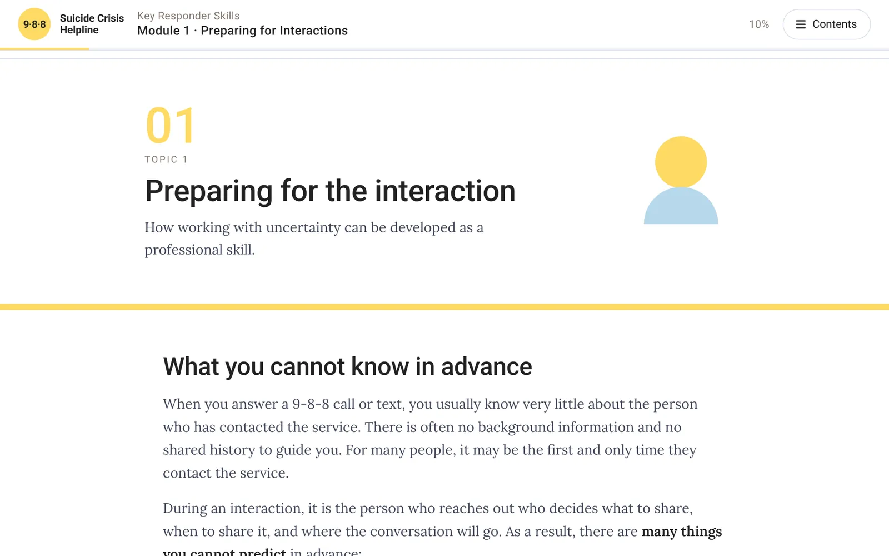

Skills-based course for crisis line responders
This seven-module course gives 9-8-8 responders a chance to practise realistic interactions before they work with the public.



The need
A national suicide crisis helpline at a mental health hospital needed a shared foundational course that teaches core skills to its responders. The course is expected to reach more than 1,200 responders.
The brief
I led the design and development of a seven-module, self-paced course that takes around five to six hours to complete. I gathered the research to ensure the course is evidence based, wrote the content, and revised the course through several rounds of feedback from clinical subject matter experts and a 20-member advisory group. For each module, it took about two weeks to go from needs analysis to a working prototype.
- Role
- Lead instructional designer
- Tools
- HTML, CSS, JavaScript, Claude
Design decisions
- I built each module around scenarios and practice activities, and included only the content responders need to complete them.
- I wrote the content so that learning happens through intrinsic feedback first (i.e., the caller’s or texter’s reaction to each choice), followed by a brief explanation.
- I placed examples ahead of explanations so that responders can compare responses before they read why one is more effective.
- I ended each module by openly acknowledging that e-learning cannot build all of these skills alone, and identified the skills that still need live practice with a supervisor, such as tone of voice.
AI
Making new things possible
What AI did
Claude helped find relevant research, scanned instructional design literature to help make needs analysis and activity templates for skills-based courses, and wrote the code for the rapid digital prototypes you see above.
What I did
I conducted the needs analysis with SMEs, reviewed the literature, and wrote the outlines and storyboards. I worked with the subject matter experts and advisory groups to review the content in depth.